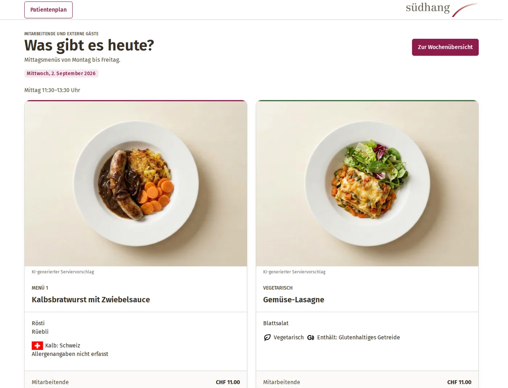
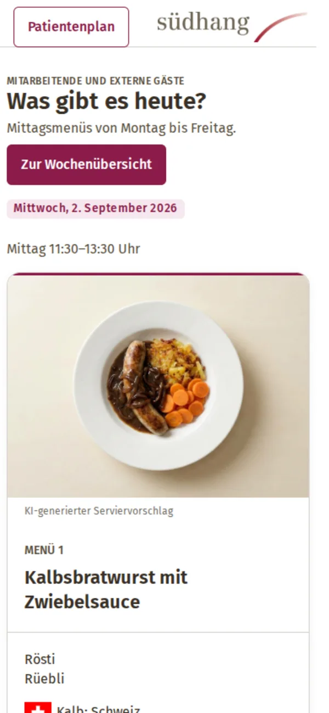
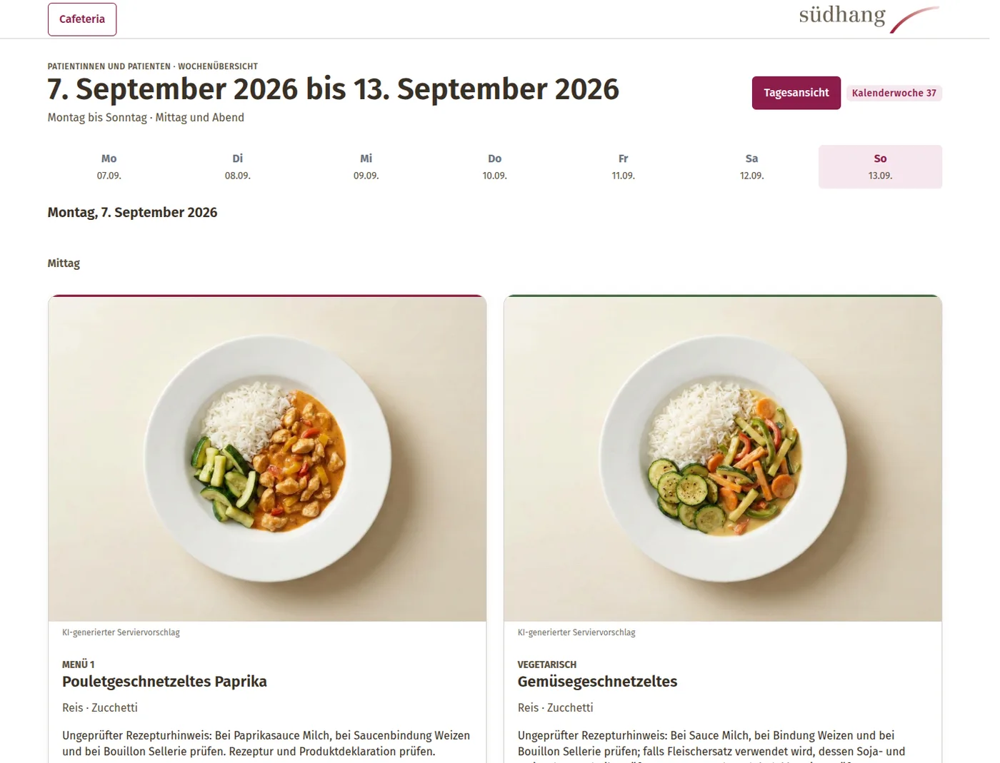
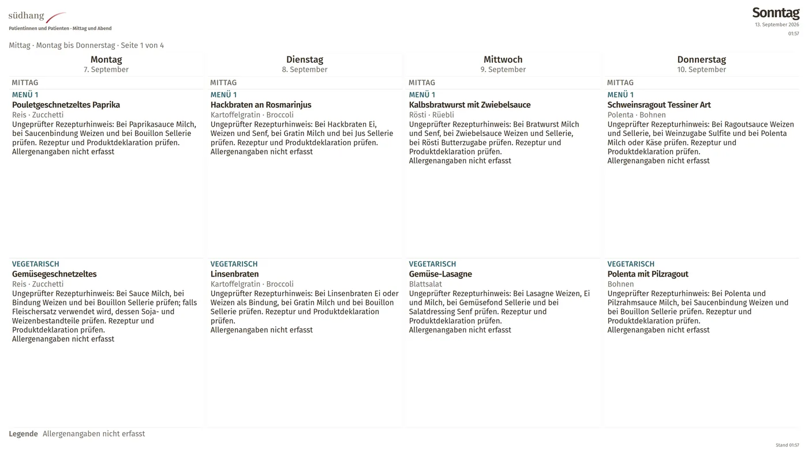
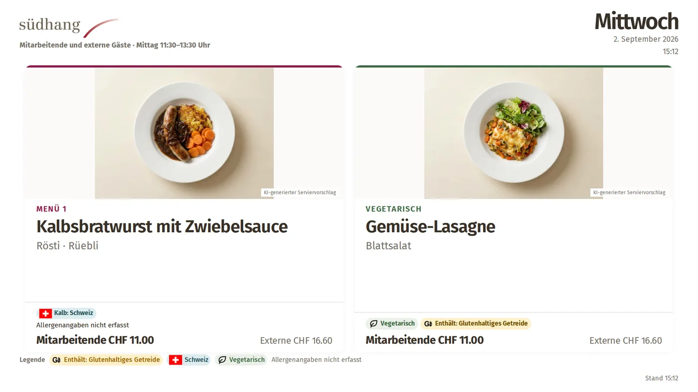
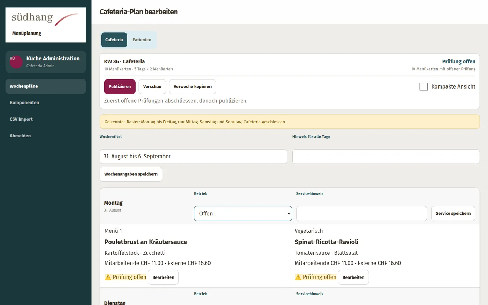

01 / Patienten
Die ganze Woche im Blick
Montag bis Sonntag, Mittag und Abend, jeweils Menü 1 und vegetarische Auswahl.
- Web-, Mobile- und Druckansicht
- Tages- und Wochen-Signage
- Kanal technisch ohne Kostenfelder
Menüplanung für Klinik & Cafeteria
Dishboard führt Küchenplanung, Freigabe und Ausgabe in einer Flask-/PostgreSQL-Anwendung zusammen — mit strikt getrennten Kanälen für Patienten und Cafeteria.
Öffentliches Open-Source-Projekt in Entwicklung


Kanaltrennung als Grundprinzip
Jedes Profil hat eigene Regeln, Revisionen und öffentliche Ansichten. Entwürfe bleiben intern.
01 / Patienten
Montag bis Sonntag, Mittag und Abend, jeweils Menü 1 und vegetarische Auswahl.
02 / Cafeteria
Montag bis Freitag mit zwei Menüarten und getrennten Ansätzen für Mitarbeitende und externe Gäste.
Echte Ansichten aus der Anwendung
Vier Ausgabekanäle — Web, Signage, Admin — mit jeweils eigenem Layout und eigener Route.

/patienten/wochenplan/

/signage/patienten/woche

/signage/cafeteria/tag

/admin/cafeteria
Vier feste Player
Jeder Bildschirm besitzt eine feste Profil- und Zeitansicht — ohne Website-Navigation, Profilparameter oder Scrollen.
/signage/cafeteria/tagTag/signage/cafeteria/wocheWoche/signage/patienten/tagTag/signage/patienten/wocheWoche · 4KOffene Daten, definierte Verträge
REST, FHIR und MCP — drei Zugänge zu denselben publizierten Speiseplänen.
OpenAPI 3.1 unter /api/v1/openapi.json, Swagger UI unter /api/v1/docs. API-Schlüssel werden unter /admin/api verwaltet.
Lesezugriff über /fhir/metadata, Ressourcen NutritionProduct und Composition.
Stdio-basiert für LLM-Clients, Quelle unter reference_scaffold/dishboard_mcp/.
Druck & CSV — A4-Wochenpläne unter /druck/patienten/woche und /druck/cafeteria/woche, CSV-Import/Export mit Validator unter /admin/import und /admin/export/<profile>.csv.
Solider, überschaubarer Stack
Serverseitige Ansichten und einfache Küchenraster statt unnötiger CMS-Komplexität.
Profilregeln, Mahlzeiten und Publikationen werden bereits in der Datenbank abgesichert.
Projektumfang für lokale Zugänge sowie Microsoft Entra ID mit rollenbasierter Küchenfreigabe.
Tag und Woche eines Profils stammen aus derselben Publikation; das andere Profil bleibt unberührt.
Deployment über docker compose, Liveness unter /health/live, Readiness unter /health/ready.
Drei Entra-App-Rollen regeln Bearbeitung, Freigabe und Systemzugang getrennt pro Kanal.
Projekt ansehen
Quellcode, Architektur und fachliche Regeln sind im öffentlichen Repository dokumentiert.
Repository öffnen